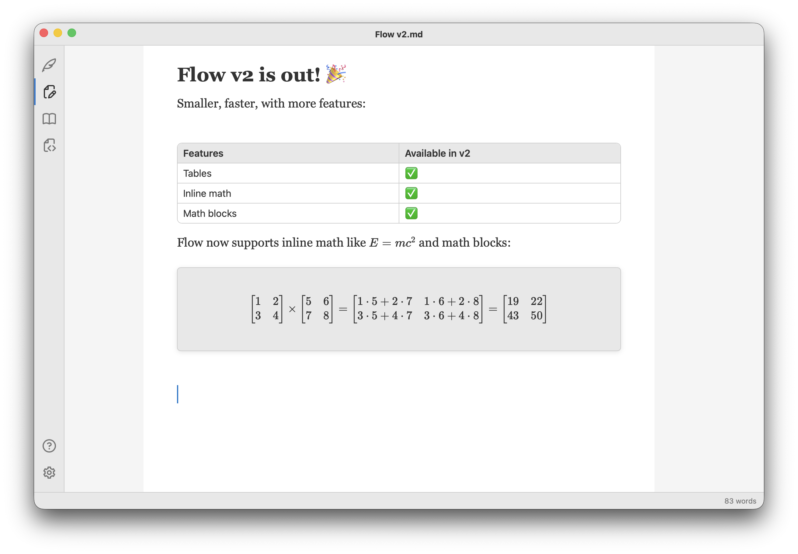
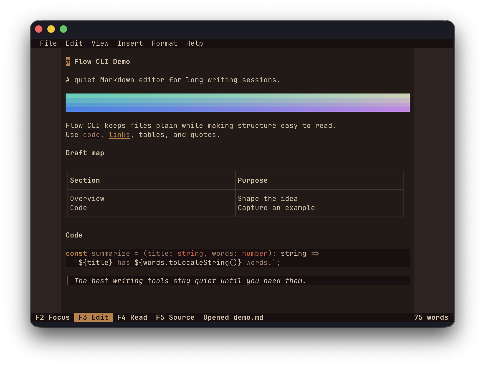

DevLog 9: Flow 2
In the previous post I talked about replatforming my editors on a custom stack, including a custom incremental Markdown parser and a custom HTML editor, which I open sourced as markoffset and scribeframe.
Since then, I released Flow 2, the next major release, which ditches Electron for Tauri and ProseMirror for scribeframe. Flow 2 is now available on both the MacOS App Store and the Microsoft Store.
The user experience stays mostly the same, except the whole editor should be snappier. I'm very happy with the bundle size, going down from hundreds of MBs (Electron) to dozens of MBs with the much smaller Tauri bundle.
I fully expect some bugs are still around and need to be squashed, but overall I'm happy with where things are at.
New Stuff
I didn't want to release a v2 that is just smaller, so this newest version comes with added support for a few more Markdown features: tables and math - both inline math and math blocks.
Here's a sample:

These were easy to add on the new stack: both the parser and editor have strong support for plugins so adding new capabilities like this becomes trivial.
Encouraged by the agentic rewrite, I decided to build a version of Flow for the
terminal because why not? Flow CLI
is a fully open-source, TUI version of the app. It includes the same editor
modes and features, even an image
widget that converts a given image into ANSI
art.

Flow CLI can be installed via Homebrew, Winget, or npm.
What's Next
Next, I'm going back to Longhand, my long form writing app. From the start, I used Flow as a test bed. With the first release of Flow, I built up the core editor (then based on ProseMirror) and learned the lesson that Electron is not as great for what I'm trying to do as I originally thought.
For the first version of Longhand, I ditched Electron, kept the editor, and focused on multiple file management and tools.
Now that I have a new editor stack, I want to port Longhand to it too - markoffset and scribeframe will replace the editor, while preserving the overall experience. I'm expecting this shift to be less work. The editor stack is working end to end in Flow 2 and Longhand is already a Tauri app. A bunch of the heavy lifting of getting Flow 2 on Tauri doesn't apply here. The port is manly swapping out one editor for the other.
Behind the scenes, I also did some refactoring to share more code. You might have noticed that Flow and Longhand have a very similar app shell: custom title bar, side rail, status bar etc. These were different implementations back when Flow was an Electron app but now that both apps share the same platform I extracted a lot of code into a shared package that provides everythign from window chrome to driving the OS menus and file IO. As things stabilize, I might open source more of the stack.
I did spend a bunch of time on this replatform sidequest but I think it's for the best. My projects are converging towards a robust long term solution. That said, I'm looking forward to wrap up the Longhand move to the new editor and resume working on what I really set out to do: a feature-rich editor for authors, with intelligent tools and beautiful UX. While I have an MVP out, there are plenty more things to build on it.
Agentic Coding
I'm relying more and more on coding agents, so I've been tending to include a section on my experience with most blog posts.
Models are getting better and better. I've been using GPT 5.6 Sol for most of the replatform work, and it has been doing a solid job overall. I still found multiple UX bugs and glitches in the typing experience which I had to workthrough. Not perfect, but if I would've written markoffset and scribeframe by hand and ported Flow over it would've taken me a lot more time than it took the agent.
I'm still gathering my thoughts, I'll probably write a dedicated post once I form a solid opinion but I do think software engineering itself is shifting. The Harness engineering article by OpenAI is illuminating. I've been incorporating some of the practices into my editor project.
Verification is a bottleneck. The model produces tests of dubious quality. One
pattern I noticed as we were working through UX bugs what it adding various CSS
tests
which are completely useless. It also bloated CI with browser-driven
automation for these which immediately blew through my GitHub credits for
Actions.
Autonomy is improving. For example, to debug, the agent can independently boot the UI in playwright, capture a screenshot, inspect it, and iterate. I also absolutely love DebugMCP, which lets an agent drive a debugger.
I've been writing various skills to improve output quality.
The technology is moving so fast that today's best practices quickly become obsolete.
At some point I'll coalesce the above into a coherent post. Until then, upgrade to Flow 2, give Flow CLI a try, and stay tuned for the release of Longhand 2.